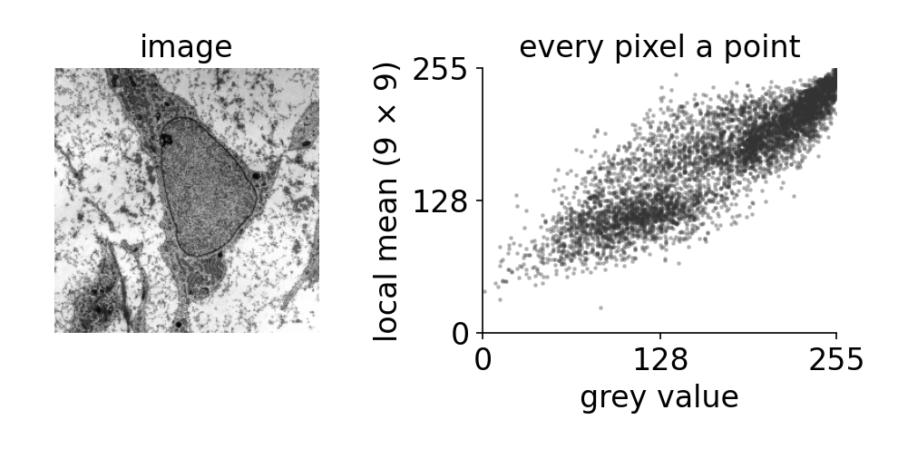
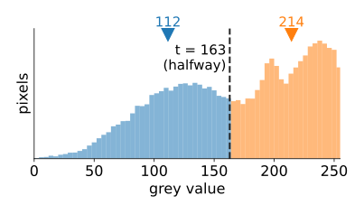
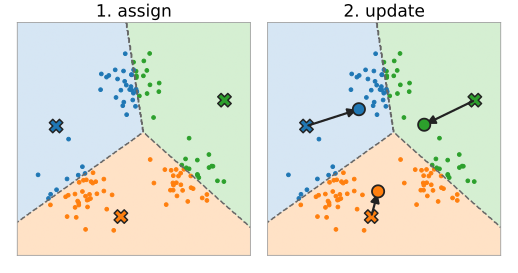
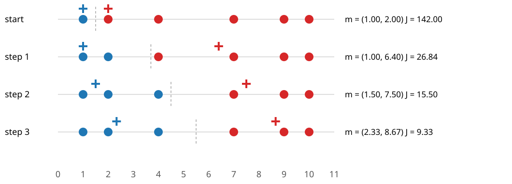
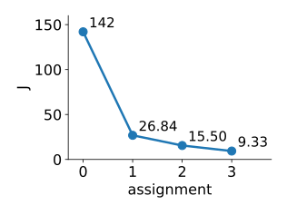
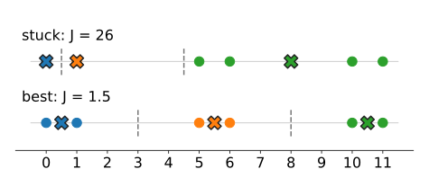
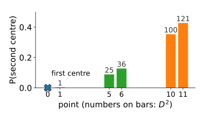
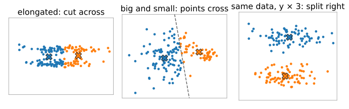
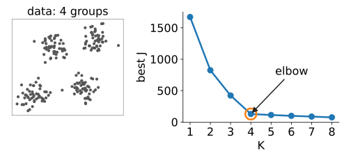

Measure a few numbers per pixel (or per object) and draw each pixel as a point, one axis per number: a feature space.
Intensity: 1D. The histogram is the cloud of points along a line.
Colour: 3D (R, G, B or L*, a*, b*).
Intensity + local mean, or colour + position (x, y): 2D to 5D.
Every segmented object is a point too: (area, mean intensity, roundness, …).
Pixels of the same kind of material form a group (a cluster) in this space. Segmentation without labels = finding the groups. The feature space and the feature stack are the subject of the random-forests day; here we only need “a point per pixel”.

The course micrograph (Robert M. Hunt, CC BY 3.0, via Wikimedia Commons): grey value against the local mean, one dot per pixel.
Recall: isodata is two groups in 1D
The thresholding day’s isodata threshold: start with a threshold t; take the mean grey value below t and the mean above; put the new t halfway between them; repeat.
That is exactly “two centres in 1D”: every pixel goes to the nearer of the two means, then each mean is recomputed.
The colour day ran the same loop on colour pixels (in Lab) as a quick colour segmentation.
Today: the algorithm itself, for any number of groups K and any dimension: what it optimises, and how it fails.

Isodata on the course micrograph: means 112 and 214, threshold halfway at 163.
Lloyd’s algorithm
Choose K and K starting centres\mathbf m_1, \dots, \mathbf m_K. Then repeat:
Assign: every point goes to its nearest centre.
Update: every centre moves to the mean of the points assigned to it.
Stop when no assignment changes.
The assignment step cuts the space into Voronoi cells: the region closer to \mathbf m_k than to any other centre.
Between two centres the boundary is the perpendicular bisector: a straight line (a plane in 3D) halfway between them.
Each iteration costs one distance per point and centre: nK distances. Cheap even for every pixel of an image.

By hand: six points on a line

Points 1, 2, 4, 7, 9, 10, K = 2, start \mathbf m = (1, 2). The dashed line is the boundary halfway between the centres.
The assign step can only lower J: each point picks the centre that is nearest, so its term can only shrink.
The update step can only lower J: for a fixed group, the mean is the point with the smallest sum of squared distances.
There are finitely many ways to split n points into K groups, and J never goes up, so the loop must stop.
In the example: J = 142 \to 26.84 \to 15.50 \to 9.33.
But “stops” does not mean “best”: it stops when no single step helps, a local minimum. (The same objective with K = 2 appears as a region energy on the level-sets day.)

The math: why each step lowers J
Update. For a fixed group G_k, J_k(\mathbf m) = \sum_{i \in G_k} \lVert \mathbf x_i - \mathbf m \rVert^2 is a convex quadratic in \mathbf m:
Moreover J_k(\mathbf m) = J_k(\bar{\mathbf x}) + |G_k|\,\lVert \mathbf m - \bar{\mathbf x} \rVert^2: any other centre costs more.
Assign. With the centres fixed, J = \sum_i \lVert \mathbf x_i - \mathbf m_{c(i)}\rVert^2 is minimised point by point by c(i) = \arg\min_k \lVert \mathbf x_i - \mathbf m_k\rVert.
Termination.J is non-increasing and takes one value per partition; there are at most K^n partitions, so no partition repeats once J strictly decreases: the loop ends. Finding the global minimum is NP-hard in general (already for K = 2 in many dimensions), which is why the starting point matters.
Try it: k-means step by step
Stuck: a local minimum
Points 0, 1, 5, 6, 10, 11, K = 3, start \mathbf m = (0, 1, 8).

Assign: \{0\}, \{1\}, \{5, 6, 10, 11\} (5 is nearer to 8 than to 1). Update: 8 stays the mean of 5, 6, 10, 11. Nothing changes: stopped, J = 0 + 0 + (9 + 4 + 4 + 9) = 26.
The obvious answer \{0, 1\}, \{5, 6\}, \{10, 11\} has J = 6 \times 0.5^2 = 1.5.
Two centres share one group, and one centre has to cover two groups. No single assign or update step can fix this: one centre would have to jump across an empty gap.
This is typical: a bad start gives a bad answer, and k-means does not tell you.
Better starts: k-means++
Random points as centres: two of them often land in the same group.
k-means++ (Arthur & Vassilvitskii, 2007): choose the first centre at random; choose each next centre at random with probability proportional to D(\mathbf x)^2, its squared distance to the nearest centre chosen so far. Far-away points are much more likely: the centres spread out.
Restarts: run from several starts and keep the run with the smallest J.
The example with first centre 0: D^2 = 0, 1, 25, 36, 100, 121, sum 283.
Whichever group is picked, the third centre then most likely lands in the remaining far group.

Try it: restarts
What k-means assumes
Every boundary is a straight bisector between two centres, and every point belongs to exactly one group. So k-means works best for groups that are
round (same spread in every direction): an elongated group is cut across, because cutting a long group in half lowers J more than separating two parallel groups;
of similar size: the boundary sits halfway between the centres, so a big, spread-out group loses its outer points to a small neighbour;
measured in comparable units: distances add squared differences of all features. Rescale one axis (µm instead of mm, or intensity × 10) and the groups change.

The next units replace the round, equal groups by Gaussians with their own shape, size and weight.
The math: the boundary is a bisector
A point \mathbf x is equally far from \mathbf m_1 and \mathbf m_2 when
The quadratic terms \lVert\mathbf x\rVert^2 cancel: a linear equation, a line (hyperplane) with normal \mathbf m_2 - \mathbf m_1 through the midpoint \tfrac12(\mathbf m_1 + \mathbf m_2).
The cell of \mathbf m_k is an intersection of half-planes: a convex polygon (Voronoi cell).
Scaling feature j by s multiplies its squared differences by s^2: distances, and so the bisectors, change. k-means is not scale invariant.
Try it: where k-means fails
How many groups?
J always decreases with K: with K = n, every point is its own centre and J = 0. So “the smallest J” cannot choose K.
The elbow heuristic: plot the best J against K; look for the K after which adding a centre helps much less.
A principled answer needs a model of how the data arise, so that “fit” and “complexity” can be traded off: unit 3 (BIC, AIC).

Summary
Pixels or objects are points in a feature space; segmentation without labels looks for groups.
k-means: assign to the nearest centre, move centres to the means, repeat. Boundaries are perpendicular bisectors (Voronoi cells).
It minimises J = \sum_i \lVert\mathbf x_i - \mathbf m_{c(i)}\rVert^2; both steps lower J, so it stops, at a local minimum.
Starts matter: k-means++ seeds far apart; restarts keep the lowest J.
Assumes round, equally sized groups in comparable units; J cannot choose K.